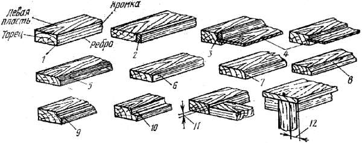
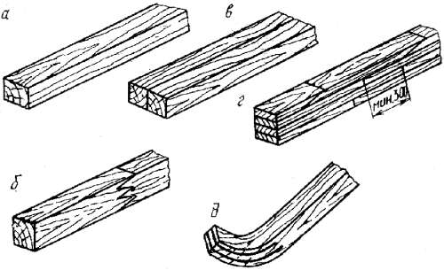
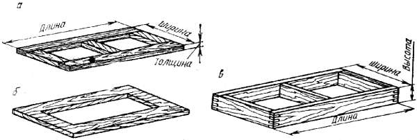
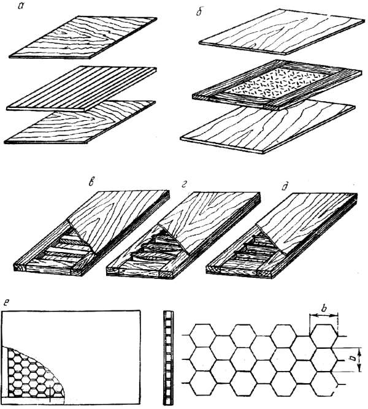
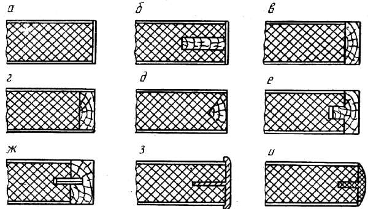
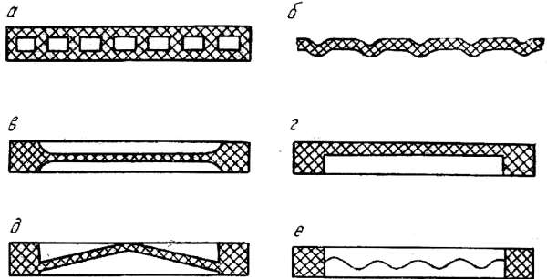
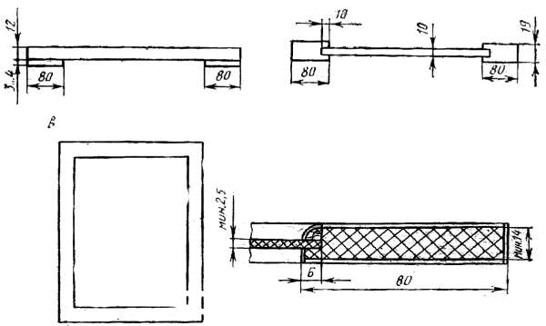
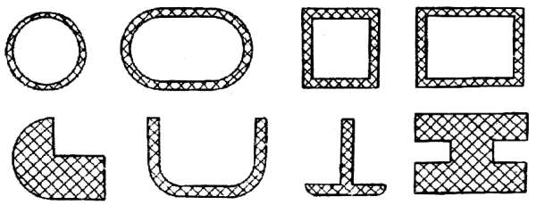

Конструктивные элементы.

Элементы мебельных изделий имеют сечения самого разного профиля, по-разному могут соединяться и детали мебели – заподлицо, со свесом, с платиком и т. д. Познакомимся с некоторыми понятиями, касающимися конструкции и формы мебельных изделий.
Раскладки – это заготовки, которые закрывают кромки щитов и рамок. В сечении они могут быть прямоугольными и профильными, устанавливаются по отношению к щиту заподлицо, с выступом или уступом.
Штапик – брусок, используемый для крепления вставленных в четверть стекол или филенок.

Рис. 61. Элементы мебельного изделия: 1 – брусок; 2 – раскладка; 3 – штапик; 4 – филенка; 5 – фаска; 6 – смягчение; 7 – закругление; 8 – галтель; 9 – калевка; 10 – фальц; 11 – размер платика; 12 – размер свеса
Филенки – щитки, вложенные внутрь рамки. Бывают плоские, со скошенными или профильными кромками, так называемые фигарейные.
Фаской называют срезанное ребро кромки детали, смягчением – небольшое закругление острого ребра кромки (радиус 1-2 мм), а заоваливанием – более значительное закругление. Фаска, смягчение и заоваливание служат предохранению ребра от повреждений (смягчают остроту грани и тем самым увеличивают сопротивление материала внешним нагрузкам).
Галтелью называют полукруглую выемку па ребре или пласти детали, калевкой – фигурно обработанную кромку элемента с целью декоративного оформления изделия.
Фальц – прямоугольная выемка. Выступающая часть, полученная при отборе фальца, называется губкой. Фальц с равными сторонами называют четвертью.
Платик – уступ размером 2-6 мм. Назначение платика – скрыть зазор, несовпадения в одной плоскости соединяемых элементов и другие дефекты. Платики упрощают сборку изделия и, как правило, предусматриваются конструкцией.
Свес – выступающая за пределы основания часть сидения табурета, крышки стола и т. д. Его размер конструктивно принимают равным 10-50 мм.
Изделия из древесины формируются из деталей и сборочных единиц. Детали изготовляют из исходного материала без сборки, они могут иметь форму бруска, щита, рамки. Такие формы могут иметь и сборочные единицы, но они получаются методом сборки отдельных деталей. Другими словами: основные конструктивные элементы изделий из древесины могут быть в виде деталей и сборочных единиц, которые в свою очередь могут иметь форму брусков, щитов, рамок и т.д.
Брусок – это простейший конструктивный элемент изделия, может быть разной формы и конструкции. Считается, что ширина бруска должна быть не более его удвоенной толщины.

Рис. 62. Виды брусков: а – цельный, б – склеенный по длине, в – скленный по ширине, г – склеенный по толщине и длине, д – гнуто-пропиленный
При проектировании изделия надо учитывать. что бруски из цельного куска древесины больше подвержены растрескиванию и короблению, чем клееные. В связи с этим существуют ограничения размеров: в сечении – 100 ? 50 мм, по длине – 2000 мм. Детали больших размеров делают клееными, так как они более прочные и формоустойчивые. Даже небольшие по сечению и длине бруски рекомендуется делать составными.
При склеивании заготовок по ширине и толщине применяют соединения по пласти и кромке. По толщине и длине наиболее простое долевое склеивание заготовок может выполняться впритык. Расстояние между такими соединениями в соседних делянках должно быть не менее 300 мм. Склеивать можно также на ус или зубчатые шипы длиной 5 мм с расположением соединений вразбежку.
При склеивании заготовок по длине применяется зубчатый шип. Для малонагруженных деталей зубчатые шипы имеют длину 10-20 мм, для деталей, работающих в напряженных конструкциях, – 32-50 мм. Размеры сечений деталей назначают с учетом стандартных размеров заготовок и припусков на обработку.
В продольном направлении бруски по форме могут быть прямоугольными и криволинейными, в сечении – прямоугольными и профильными, а в зависимости от способа изготовления – выпильными, прессованными, гнутыми, гнуто-клееными, гнуто-пропиленными. Выпильные и гнутые бруски получают из цельной древесины. Конструкция гнутых брусков зависит от назначения. Прессованные и гнуто-клееные бруски изготавливают из пластин древесины, фанеры, шпона. Направления волокон в гнуто-клееных брусках из шпона могут быть взаимно перпендикулярными или продольными во всех слоях (в последнем случае жесткость брусков выше). Такие бруски применяют для изготовления ножек стульев, кресел, столов и т. п. Гнуто-пропиленные бруски представляют собой разновидность гнуто-клееных. В них предварительно делают продольные пропилы, в которые вставляют на клею конструктивные элементы (обычно из лущеного шпона). Пропиленную часть бруска с вложенными элементами гнут и склеивают. После склеивания заготовка сохраняет свою форму. Такие бруски используются, если необходимо иметь детали с кривизной только одного конца.
Бруски являются простейшим исходным элементом при конструировании изделий. Путем склеивания и сборки из брусков можно получить самые разные конструктивные элементы – щиты, рамки, коробки, каркасы изделий.
Рамки также бывают различными по конструкции и форме. Их изготавливают из брусков, соединенных между собой угловыми и серединными вязками или скобами, а также из плитных материалов (методом фрезерования).
При конструировании брусковых рамок с облицованными кромками соединения надо применять такие, чтобы торцы шипов не выходили на облицованную поверхность. Делается это потому что со временем шипы станут заметными. Правда, изготовление рамок с шиповыми соединениями брусков трудоемко, поэтому, если рамка не воспринимает больших усилий, детали можно соединить и скобами. Подобное соединение является промежуточным, его прочность должна обеспечить выполнение технологической операции (например, склеивание в прессе).

Рис. 63. Различные конструкции рамок и коробок: а – рамка брусковая; б – рамка щитовая, в – коробка
Щитовые рамки можно изготовить из облицованных древесностружечных плит, в этом случае просвет рамки выполняют фрезерованием. На мебельных предприятиях такие рамки изготавливают цельнопрессованными из измельченной древесины, кусковых отходов древесностружечных плит или столярных плит методом предварительной сборки и с последующим облицовыванием.
Проем рамки закрывается стеклом или филенкой из фанеры или древесностружечной плиты (обычно облицованной). Филенки и стекла вставляют в четверть или крепят с двух сторон штапиками. Филенки можно вставлять в паз, тогда их нельзя вынуть из рамки.
Коробки являются разновидностью рамок (широкие пласти брусков расположены перпендикулярно к плоскости самой коробки). Коробки широко применяют в мебельных изделиях для формирования корпуса и при изготовлении ящиков. В зависимости от назначения коробки могут иметь различные соединения. Детали коробок изготавливают из древесины, различных плит, пластмасс, металла.
Одним из основных формообразующих конструктивных элементов изделий из древесины являются щиты. Они изготавливаются из различных материалов и имеют разную конструкцию. Наиболее распространены щиты из древесностружечных плит, облицованных различными материалами (шпоном, пленками).
Применяются также щиты дощатые в виде рамок с различным заполнением. Их склеивают из массивных делянок на гладкую фугу, в паз и гребень, на рейку. Чтобы уменьшить коробление таких щитов, применяют различные наконечники, обвязку рамками, а делянки делают малой ширины.
Нестандартные столярные плиты получают при оклеивании основы щитов из древесины лущеным шпоном. Если используется основа из не склеенных между собой реек, толщина слоев облицовки должна быть не менее 3 мм, а плит со склеенными рейками – не менее 1,5 мм.

Рис. 64. Конструкции щитов: а – трехслойного столярного; б – рамочного со сплошным заполнением; в – пустотелых с реечным заполнением из древесины; г, д – пустотелых с реечным заполнением из фанеры или древесноволокнистой плиты; е – пустотелых с сотовым заполнением из пропитанной смолой бумаги
Щиты со сплошным заполнением делают в виде рамки, заполненной стружечно-клеевой смесью, пенопластом или другим материалом.
Применяются также пустотелые щиты, которые представляют собой рамку, оклеенную шпоном, фанерой или древесноволокнистой плитой. Для обеспечения жесткости между облицовками кладут реечный или сотовый заполнитель. Такие щиты легче, достаточно прочные, имеют низкую звуко– и теплопроводность, но подвержены большему короблению, чем щиты из древесностружечных плит, имеют меньшую жесткость в плоскости, перпендикулярной к пласти, а также волнистость поверхности из-за втягивания облицовок в промежутки между рейками.
Заполнителями пустотелых щитов могут быть отходы фанеры, древесноволокнистой, столярной и древесностружечной плит. Рамки таких щитов также могут изготавливаться из отходов древесностружечных плит, так как для мебели они могут быть шириной 35-50 мм. Чтобы втягивание облицовок было небольшим, заполнители располагают перпендикулярно к направлению волокон облицовки, а расстояние между рейками-заполнителями должно быть не более 20b (b – толщина облицовочного слоя). В пустотелых щитах с сотовым заполнением ширина ячеек не должна превышать 20 мм при облицовывании двумя слоями шпона, 30 мм – фанерой толщиной 3-4 мм с одновременным облицовыванием строганым шпоном. Такие щиты мало подвержены втягиванию облицовок и могут применяться при производстве мебели.
Пустотелые щиты могут быть односторонними, т. е. несимметричной конструкции. В изделии их устанавливают наглухо, в противном случае они будут коробиться.
Кромки щитовых деталей конструктивно оформляются в зависимости от вида и назначения щитов. В большинстве случаев кромки древесностружечных плит облицовывают строганым шпоном или кромочным пластиком. На торцовые кромки столярных плит должны быть приклеены обкладки, соединяемые в паз и гребень. Долевые кромки с серединками из склеенных реек можно облицовывать без предварительного наклеивания обкладок.

Рис. 65. Оформление кромок щитовых деталей: а, б – облицовкой строганым шпоном или кромочным пластиком; в– д – приклеиванием обкладок из массивной древесины на гладкую фугу; е – то же, в шпунт и гребень; ж – то же, на вставную рейку; з, и – металлическими или пластмассовыми раскладками
Если на наружную поверхность не выступают торцы шипов и брусков, кромки пустотелых и других рамочных щитов можно облицовывать без обкладок. Кромки всех видов щитов могут закрываться профильными металлическими или пластмассовыми обкладками. Часто кромки щитовых деталей делают не только прямыми, но и профильными. Так оформляют и кромки деталей из древесностружечных плит. Для этого их предварительно профилируют, а при необходимости шлифуют и облицовывают специальным кромочным материалом.
Оптимальная конструкция требует, чтобы нагруженные участки деталей имели сечения большей площади или повышенную прочность. Например, полки, работающие на изгиб, должны иметь высокую жесткость облицовочных слоев. Для деталей такого типа целесообразно применять плиты с ориентированной стружкой, а также профилированные сечения (на рис. позиции а и б).

Рис. 66. Сечения щитовых элементов и мебельных дверей
Мебельные двери могут иметь сечения, показанные на рис. 66 (позиции в–е).
Для жесткости и возможности крепления фурнитуры по периметру дверь должна иметь утолщенный пояс или борт, средняя часть при этом может быть в виде филенки. В качестве филенок могут использоваться тонкие плиты, фанера, ДВП, стекло, листовой полистирол, листовое стекло, облицованное строганым шпоном. Перечисленные элементы при своей относительно малой толщине обладают высокой прочностью на изгиб.
Изготовить мебельную дверь можно из древесностружечной плиты малой толщины (12 мм, на рис. позиция а). С внутренней стороны двери по длине наклеиваются полосы из твердой древесноволокнистой плиты толщиной 3-4 мм, что позволяет производить крепление дверей с помощью обычной фурнитуры. Конструкция двери, показанная на рис. (б), состоит из плит двух толщин: ее крайние элементы выполнены из плиты толщиной 19 мм, а средний, выполняющий роль филенки, – 10 мм. Позиция «б» демонстрирует рамочно-филенчатую дверь с рамкой из плиты толщиной 14 мм и филенкой из ДВП толщиной 2,5 мм.

Рис. 67. Конструкции дверей из плит разной толщины
Для разнообразия конструкций в одном изделии можно использовать древесностружечные плиты разной толщины, например для малонагруженных элементов – толщиной 8-10 мм, в качестве основного конструкционного материала – 15-16 мм, а для сильно нагруженных деталей – более 16 мм.
Вместо массивной древесины и древесностружечных плит можно применять также древесноволокнистые плиты средней плотности (сухого способа производства) толщиной 8-35 мм.

Рис. 68. Сечения профильных погонажных элементов
Погонажные элементы из древесно-клеевой массы или шпона можно использовать для изготовления ножек столов, кресел, оснований мягких элементов, декоративных элементов и т. д.